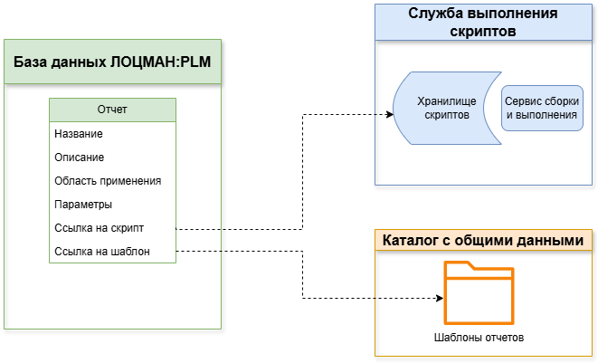
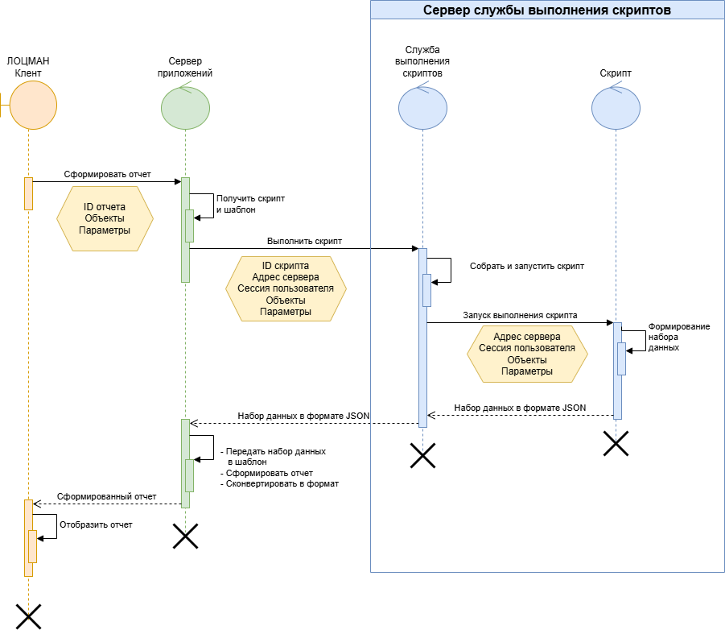

Общая информация
Описание
Данное руководство содержит рекомендации и описывает процесс разработки серверных отчетов ЛОЦМАН:PLM
Такое название данный вид отчетов получил, поскольку отчеты этого вида полностью формируются серверной частью ЛОЦМАН:PLM - по этой причине они могут быть использованы как в "настольной", так и в веб-версии ЛОЦМАН:PLM, а также выполняться асинхронно.
ВНИМАНИЕ
Для отбора данных используются специальные скрипты, выполняемые специальным сервисом - "Службой выполнения скриптов".
Служба выполнения скриптов - новый компонет (сервис) серверной части ЛОЦМАН:PLM. Обязательно нужен для разработки и формирования серверных отчетов. Устанавливается в единственном экземпляре. Настройки доступны в приложении "Центр Управления Комплексом"
Скрипты отбора данных реализуются разработчиком отчетов.
Доступны два типа скриптов:
- C# скрипт — проект C#, собираемый и выполняемый службой выполнения скриптов как отдельное приложение. При использовании этого типа скриптов для отбора данных предполагается использование WEBAPI сервера ЛОЦМАН:PLM
- C# ServerAPI скрипт — проект C#, собираемый и выполняемый службой выполнения скриптов как подключаемая к службе библиотека. При использовании этого типа скриптов для отбора данных предполагается использование API, предоставляемого библиотекой "ServerAPI"
Разработка скриптов может производиться как в редакторе, интегрированном в веб-приложение "ЛОЦМАН Конфигуратор", так и внешними средствами, с последующей загрузкой скрипта в службу выполнения.
Для вывода отчетов в печатную форму используются шаблоны FastReport.NET.
Шаблоны FastReport.NET позволяют не только выполнять разметку оформления данных, но управлять формированием отчета с использованием программного кода на C#
Редактор шаблонов интегрирован в веб-приложение "ЛОЦМАН Конфигуратор" и позволяет проектировать шаблон вывода на основе результатов отбора данных.
Серверные отчеты позволяют генерировать документы в следующих форматах: - Файл отчета FastReport - Документ Microsoft Word - Документ Microsoft Excel - Документ LibreOffice Writer - Документ LibreOffice Calc - Документ PDF - Страница HTML - Изображение в формате PNG
Модель данных
С точки зрения модели данных ЛОЦМАН:PLM, серверный отчет как и другие виды имеет следующие свойства
- Название отчета
- Описание
- Область применения: объекты, задания, бизнес-процессы и неопределенная область
А также серверный отчет ссылается на скрипт отбора данных в системе выполнения скриптов и на шаблон оформления отчета, расположенный в каталоге общих данных

Общая схема взаимодействия компонентов при формировании отчета
При формировании отчета выполняются следующие действия
- Пользователь в "ЛОЦМАН Клиент" выбирает отчет, заполняет параметры отчета нужными значениями и запускает его формирование (отправляет команду серверу приложений)
При этом серверу передаются:- идентификатор отчета
- список идентификаторов объектов, выбранных для формирования отчетов (или заданий или бизнес-процессов)
- список параметров формирования отчета и их значений
- правила версионного конфигурирования (если отчет запускался в режиме "динамической" структуры)
- формат выходного документа
- Сервер приложений в конфигурации базы данных определяет связанные с отчетом скрипт отбора данных и шаблон оформления
- Сервер приложений отправляет службе выполнения скриптов задание на выполнение отбора данных.
При этом службе выполнения скриптов передается:- идентификатор скрипта
- адрес сервера приложений - для того, чтобы использовать его в скрипте отбора данных
- сессия пользователя - для того, чтобы отбор данных выполнялся от имени текущего пользователя
- список объектов, параметры формирования отчета и правила версионного конфигурирования, полученные от клиентского приложения
-
Служба выполнения скриптов выполняет следующие действия:
- при необходимости "собирает" скрипт в запускаемое приложение
- выполняет собранное приложение, передавая ему в качестве параметров адрес сервера приложений и идентификатор сессии.
Список объектов, параметры формирования отчета и правила версионного конфигурирования передаются в приложение в формате JSON, используя стандартный поток ввода.Пример параметров в формате JSON. Все значения параметров вымышлены и приведены в демонстрационных целях{ // Список идентификаторов объектов, по которым будет формироваться отчет "object_ids": [3314], // Параметры формирования отчета (указанный при регистрации в базе данных) "params": { "Глубина разузловки": "3", "Тип связи": "Состоит из ..." }, // Параметры версионного конфигурирования "conf_rules" : { // Идентификатор правила версионного конфигурирования "rule_id": 5, // Идентификатор конечного изделия "final_product_id": 7561, // Путь абсолютной связи от изделия до объекта "path": [12151, 1511, 4654], // Параметры правила конфигурирования "rule_params": [ { // Имя параметра "param_name": "На дату", // Тип параметра версионного конфигурирования: 0|1 // 0 - Состояние версии объекта (для одного правила применяемости не может быть больше одного такого параметра). // 1 - Атрибут применяемости "param_type": 1, // Значение параметра версионного конфигурирования "param_value": "", // Признак "Любое значение параметра" "is_any": false } ], // Не используется, оставлено для совместимости API "fixed_context_id": 0 } }
-
Скрипт (собранный в приложение):
- Извлекает переданные ему параметры
- Выполняет отбор данных, согласно логике конкретного отчета
- Полученный набор данных оформляет в формат JSON и отправляет его в стандартный поток вывода
- Служба выполнения скриптов передает полученный от скрипта набор данных в формате JSON серверу приложений
- Сервер приложений:
- связывает шаблон формирования отчета с полученным набором набором данных, указывая его в качестве источника для этого шаблона
- запускает формирование отчета по шаблону
- конвертирует шаблон в полученный от клиентского приложения формат
- возвращает полученный документ клиентскому приложению

ВНИМАНИЕ!
Приведенный сценарий является очень упрощенным. Он демонстрирует принципиальную схему взаимодействия компонентов и потоков информации между ними. Реальная схема обеспечивает асинхронность формирования отчетов, сохранение результатов формирования в базе данных, выполнение скрипта в контексте процесса службы выполнения
ПРИМЕЧАНИЕ Следующие данные сервер приложений передает службе выполнения скриптов в виде
Рекомендуемый порядок разработки отчета
Рекомендуется следующий порядок разработки отчета:
- Создать новый отчет в веб-приложении - при этом будет создан новый скрипт отбора данных и новый шаблон
-
Разработать скрипт отбора данных, одним из двух способов:
- в редакторе, интегрированном в веб-приложение "ЛОЦМАН Конфигуратор"
- используя внешние средства разработки|
-
Выполнить скрипт в веб-приложении "ЛОЦМАН Конфигуратор" и получить набор данных для оформления отчета
- В веб-приложение "ЛОЦМАН Конфигуратор" перейти к редактированию шаблона - выполнить разметку шаблона, разработку дополнительного кода по оформлению шаблон